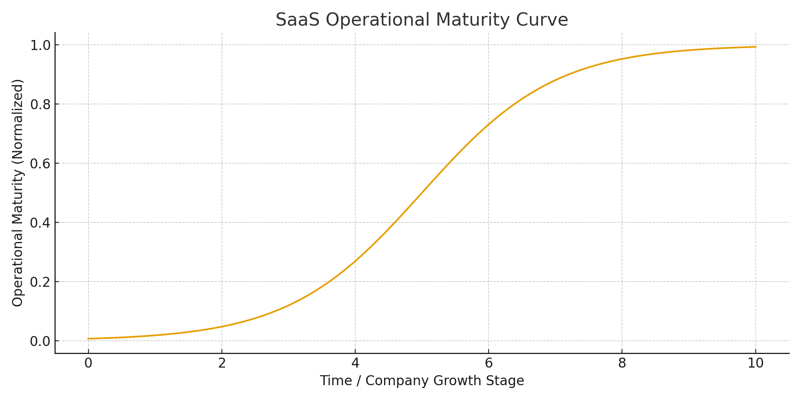
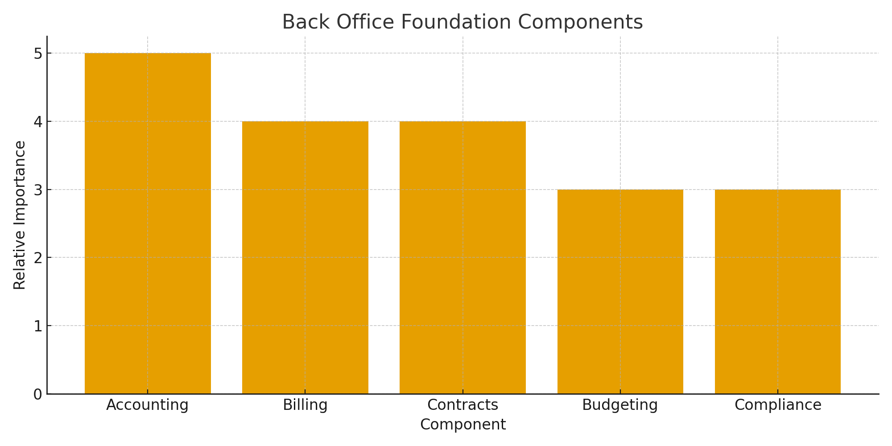
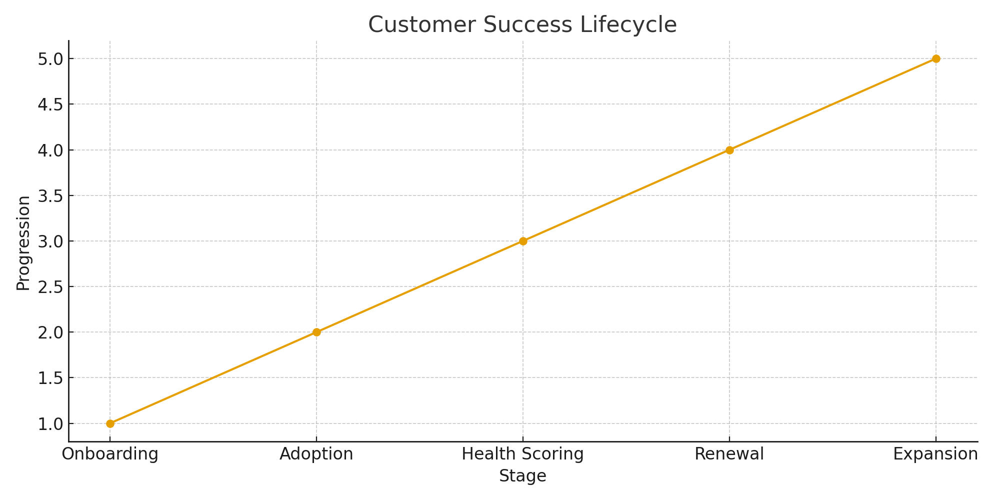
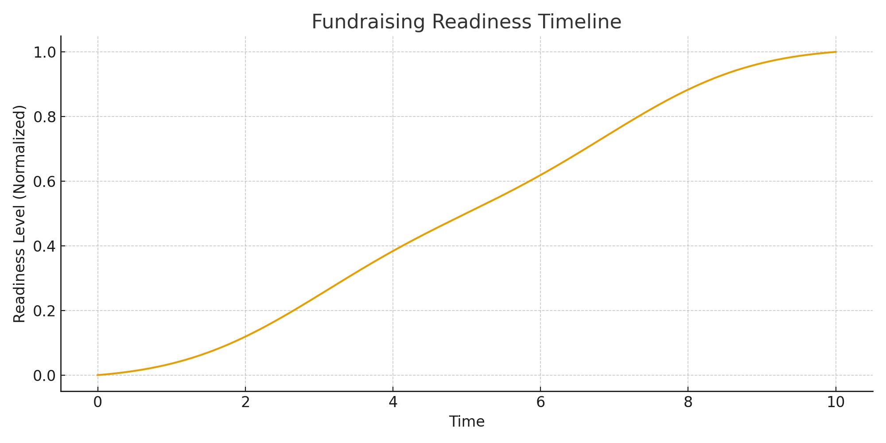

Overview
Executive Summary
In the earliest days of a SaaS company, everything depends on the founders. They sell, onboard, support, invoice, pitch, and patch together the operations needed to survive. That scrappy chaos can get a company to its first few customers—but it will not carry it through the next stage.
This case study follows a Partner/Operations Leader stepping into that messy middle and building the systems, roles, and processes needed to move from survival to scalable, investor-ready growth.
- Building a reliable back-office foundation and financial visibility
- Designing customer success and renewal structures to protect and grow revenue
- Preparing the company for grants, loans, seed funding, and future VC due diligence
- Moving from one-off founder heroics to repeatable go-to-market motions
The goal of this playbook is simple: give early-stage SaaS leaders a clear picture of what it looks like to professionalize operations without losing the agility that got them here.
Starting Point
What "Scrappy Chaos" Really Looks Like
At the point this Partner/Operations Leader joined, the company had real traction: an initial customer in production, early revenue, and active conversations with others. Under the hood, though, the business looked like most early-stage SaaS startups:
- Founders owning sales, operations, finance, HR, and support
- No clear pipeline or sales process—just deals pushed through with hustle
- Customer onboarding handled ad hoc, differently every time
- Billing and bookkeeping done reactively
- Key documents and decisions spread across email, chat, and memory
- Little in the way of investor-ready metrics or documentation
The company had done the hard part—creating something valuable that customers would pay for. Now it needed operational maturity to sustain and scale that value.
Figure 1 · SaaS Operational Maturity Curve

Inflection Point
What Needed to Change
The Partner/Operations Leader quickly identified four areas that had to mature before the business could scale with confidence:
- Back Office Foundation – financial systems, billing, contracts, cash visibility
- Customer Success Infrastructure – onboarding, support, renewals, expansion
- Fundraising Readiness – KPIs, reporting, documentation required for grants, loans and seed capital
- Early GTM Maturity – repeatable sales motion, ICP clarity, proof that Customer 1 → Customer 2 → Customer 3 was possible
These weren't "nice to have" improvements—they were prerequisites for becoming a company investors could trust and customers could rely on long-term.
Framework
The Scaling Framework
To move from chaos to maturity, the Partner/Operations Leader used a simple but powerful framework built on five components:
- Back Office Foundation
- Customer Success Infrastructure
- Fundraising Readiness
- Early Go-to-Market Maturity
- Role Specialization & Operational Rhythm
1. Back Office Foundation
The first order of business was understanding what was really happening with money and risk inside the business. That meant:
- Implementing proper bookkeeping and reconciliation
- Organizing contracts, SOWs, and renewals into a single source of truth
- Formalizing invoicing and collections processes
- Building basic budgets and cash runway models
- Introducing lightweight compliance and documentation practices
Figure 2 · Back Office Foundation Components

2. Customer Success Infrastructure
With subscription revenue, retention and expansion aren't side effects—they're the business model. Customer success needed to evolve from reactive support into a structured lifecycle:
- Defining a standard onboarding sequence
- Mapping the customer lifecycle from first login to renewal
- Establishing customer health signals
- Setting a cadence for check-ins and executive touchpoints
- Capturing feedback to inform the roadmap
Figure 3 · Customer Success Lifecycle

3. Fundraising Readiness
Even if fundraising isn't happening today, operational discipline is what makes fundraising possible tomorrow. The company needed:
- A consistent KPI set: ARR, churn, CAC payback, gross margin, runway
- Basic reporting rhythms: monthly summaries, quarterly deep dives
- Documentation and materials for grants, loans, and seed opportunities
- A coherent narrative tying product, customers, and financials together
Figure 4 · Fundraising Readiness Timeline

4. Early Go-to-Market Maturity
The company didn't need a fully built sales organization yet—but it did need a basic, repeatable motion:
- Clarifying the ideal customer profile (ICP)
- Capturing win stories and use cases from the first customers
- Building a simple, trackable pipeline view
- Establishing a discovery and qualification approach
- Creating the conditions for a future VP of Sales to succeed
5. Role Specialization & Operational Rhythm
As systems came online, the next step was getting the right people doing the right things:
- Shifting recurring tasks out of the founders' hands
- Assigning ownership for operations, customer success, and back office
- Setting predictable rhythms: weekly check-ins, monthly reviews, quarterly planning
- Building an early hiring roadmap aligned to real needs, not guesswork
Case Study
How It Came Together in Practice
While details are anonymized, the sequence of work is typical of what happens when a Partner/Operations Leader is brought into a growing SaaS company at the right time.
Phase 1 — Assessment & Stabilization
- Audited existing processes, tools, and documentation
- Stabilized back-office processes and financial visibility
- Organized key contracts, SOWs, and renewal details
Phase 2 — Customer Success Maturation
- Documented onboarding and key milestones
- Introduced a renewal calendar and owner
- Laid groundwork for expansion by mapping usage and adoption
Phase 3 — GTM Preparation
- Clarified ICP and sharpened the value proposition
- Captured early win stories as proof points
- Set up a basic but usable pipeline tracking method
Phase 4 — Fundraising Readiness
- Defined and began tracking core SaaS KPIs
- Developed the operational story for potential funders
- Prepared materials and processes for grants and loans
Phase 5 — Organizational Maturity
- Reduced founder dependency by delegating operational ownership
- Created line of sight to key hires (e.g., future VP Sales)
- Embedded rhythms and systems that would support future growth
Impact
Business Impact
Operational Outcomes
- Reliable view into cash, burn, and runway
- Reduced risk from undocumented contracts and ad hoc billing
- Better predictability in day-to-day operations
Customer Outcomes
- More consistent onboarding experience
- Higher likelihood of renewal due to proactive engagement
- Clearer path to expansion conversations
Fundraising & Organizational Outcomes
- Improved credibility with potential funders
- Greater internal confidence and clarity
- Lower reliance on founder heroics for basic operations
Build an Operational Foundation Investors and Customers Trust
This case reflects the work of a Partner/Operations Leader embedded inside an early-stage SaaS company. The same principles now inform how HCI Solutions helps founders move from scrappy chaos to scalable, investor-ready operations.
- Assess your current operational maturity
- Design a 90-Day Scale Up plan for back office and customer success
- Prepare documents, KPIs, and narratives for fundraising readiness
- Provide fractional COO-style leadership to guide implementation